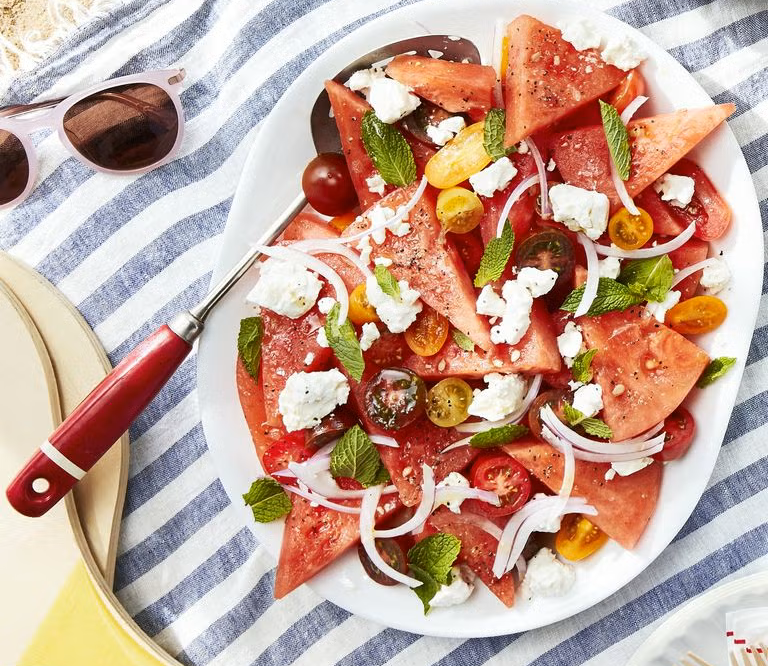

Amanida de síndria, tomàquet i feta

Fig.x - Watermelon,
Tomato and Feta Salad
Ingredients
-
1 u Síndria Petita
-
Formatge Feta
-
1/2 tassa de Menta
-
1/4 tasses de ceba vermella
-
340 g de tomàquets cherry per la meitat
-
29,57 ml d'oli d'oliva
-
29,57 ml de suc de llima
-
4,92 ml de mel pura
-
Sal i pebre negre
Pasos
-
Talla la síndria en triangles.
-
Emplata el plat amb la síndria.
-
Afegeix la menta fresca, la ceba vermella i el tomàquet.
-
En un altre bol amb oli d'oliva, el suc de llima, la mel, el salt i el pebre.
-
Escampa'l aquest bol en les síndries i afegeix el formatge feta.